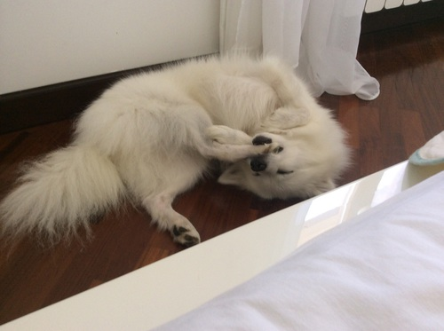

Why Volpino Italiano?
My love to this breed flamed when I saw this amazing small dog for the first time. I just knew that I will get one of these little cuties to be mine.
If you are considering getting a dog this breed is a really good choise. Volpino is very active and playful so you can consider doing many things with your little snowball. Many activites are available due to its clerness and activness. Also family is everything to this dog so if you want a dog that is loyal and loves you unconditionally I highly recommend this loveliest dog on earth.
The size of this dog is really convinient and you can take your dog with you anywhere. And a dog this adorable evokes admiration among all people. Even those who don't love dogs. Then what is a prize of this dog? It really depends on a country and breeder. My advice is that don't look at the price tag, look at the conditions and health records of the puppies parents.